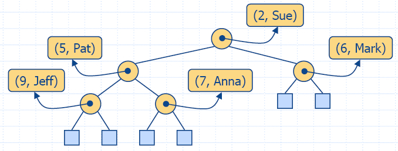
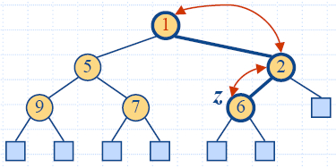
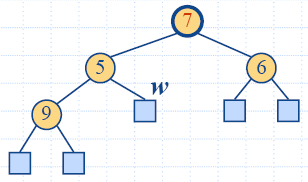

Приоритетна опашка - втора част
Хип
- Една ефективна реализация на приоритетна опашка
използва (нелинейна) структура от данни, наречена хип
(купчина) - изпълнява и двете основни операции (вмъкване и
изваждане) за логаритмично време O(log n).
Структура от данни хип
- Хип е двоично дърво, пазещо ключове във вътрешните възли
и имащо следните свойства:
- Хип-наредба
(Heap-Order): за всеки вътрешен възел v който не е корена, key(v) ≥ key(parent(v));
- Пълно двоично дърво
(Complete Binary Tree): нека h е височината на
дървото
- за i = 0, …
, h − 2, има 2i възела е
дълбочина i;
- за дълбочина h −
1, вътрешните възли са наляво от външните възли.
- Последен възел (last
node) на хипа е най-десния вътрешен възел на
дълбочина h − 1.

Твърдение: Хип T съдържащ n ключа има височина h = [log(n + 1)].
Доказателство: (прилагаме свойството пълно двоично дърво)
- Тъй като има 2i
ключове с дълбочина i =
0, … , h −2 и поне
един ключ с дълбочина h
−1, имаме n ≥ 1 + 2
+ 4 +… + 2h −2
+ 1 = 2h −1, следователно n ≥ 2h − 1, т.е. h ≥
log n + 1.
- От свойствата на пълно двоично дърво - има 2h − 1
ключове с дълбочина h −1, имаме n ≤
1 + 2 + 4 +… + 2h
−1 = 2h −1,
следователно n ≤
2h −1,
т.е. h ≤ log (n + 1).

Реализация на приоритетна опашка
с хип
- Ще използваме хип за реализация на приоритетна опашка.
- Ще съхраняваме (key,
element) обекти
във всеки вътрешен възел.
- Ще пазим (следим) позицията на последния възел.

Представяне на хип с
вектор
- Ще представим хип с n
ключове като вектор с дължина n + 1.
- За възел с ранг i
- лявото дете е с ранг 2i,
- дясното дете е с ранг 2i +1.
- Връзките между възлите не се пазят директно.
- Листата на дървото не са представени във вектора.
- Клетката с ранг 0 не се използва.
- Операция insertItem
съответства на вмъкване с ранг n + 1.
- Операция removeMin
съответства на премахване с ранг 1.
- Получаваме хип сортиране "на място" (без допълнителна
памет).

Вмъкване
- Методът insertItem
на приоритетна опашка АТД съответства на добавяне на ключ k към хипа.
- Алгоритъмът за добавяне се състои от 3 стъпки:
- намиране на възел за вмъкване z (нов последен възел);
- Записваме k в
z и разширяваме z до вътрешен възел;
- Възстановяваме хип-наредбата (дадено по-долу).
"Бълбукане нагоре" след вмъкване
- След вмъкване на нов ключ k, хип-наредбата може да се наруши.
- Алгоритъмът "бълбукане нагоре" (upheap) възстановява
хип-наредбата чрез размяна на k по пътя нагоре (към корена на дървото) от
възела на вмъкване.
- Размяната се прекратява,
когато ключът k достигне
корена или възел, чийто родител е с ключ по-малък или
равен на k.
- Тъй като хипът има височина O(log n),
алгоритъмът "бълбукане нагоре"
се изпълнява за време O(log
n).

|

|
Премахване
- Методът removeMin
на приоритетната опашка АТД съответства на премахване на ключа
на корен от хипа.
- Алгоритъмът за премахване се състои от 3 стъпки:
- Заместване на ключа на корена с ключа на последния
възел w.
- Свиваме w и
неговите деца в едно листо.
- Възстановяваме хип-наредбата (дадено по-долу).

|

|
"Бълбукане надолу" след
премахване
- След заместване на ключа на корена с ключа k
на последния възел, хип-наредбата може да се наруши.
- Алгоритъмът "бълбукане надолу" (downheap) възстановява
хип-наредбата чрез размяна на ключа k по пътя надолу (към листата) от корена.
- Размяната се прекратява когато k достигне листо или възел, чийто деца имат
ключове по-големи или равни на k
- Тъй като хипът има височина O(log n),
алгоритъмът "бълбукане надолу"
се изпълнява за време O(log
n).
Анализ
Function
|
Time
|
size(),
isEmpty()
|
O(1)
|
minElement(),
minKey()
|
O(1)
|
insertItem(k,e)
|
O(log n)
|
removeMin()
|
O(log n)
|
C++ реализация
html-7.7
(HeapTree)
html-7.8 (HPQ1)
html-7.9 (HPQ2)
Сортиране с хип
- Разглеждаме приоритетна опашка с n обекти, реализирана
като хип:
- използваната памет е O(n);
- методите insertItem
и removeMin
отнемат време O(log
n).
- методите size,
isEmpty, minKey и minElement отнемат
време O(1).
- Използвайки реализирана с хип приоритетна опашка, можем
да сортираме множество от n
елемента за време O(n log n).
- Получения алгоритъм се нарича сортиране с хип.
- Сортирането с хип е много по-бързо, отколкото
квадратичните алгоритми за сортиране, като вмъкване и избор.